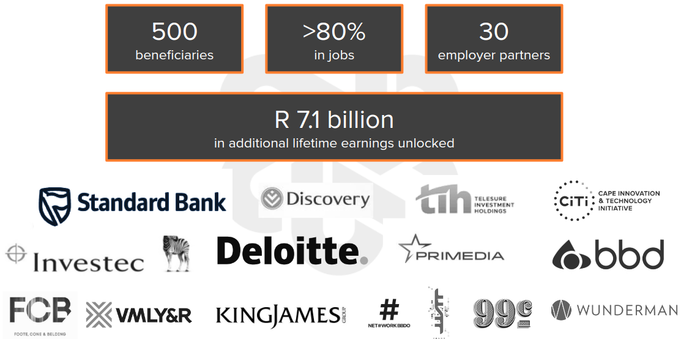
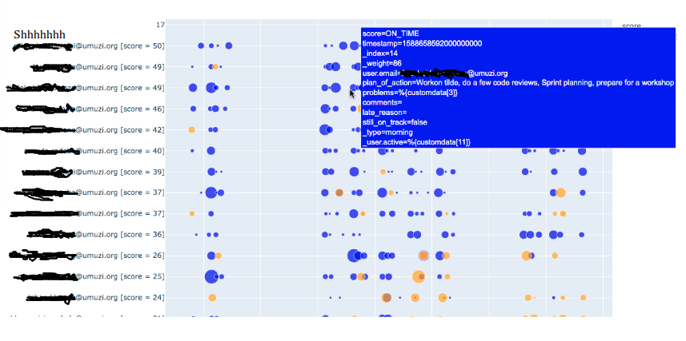
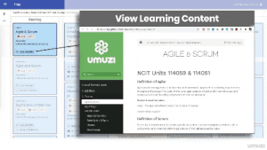
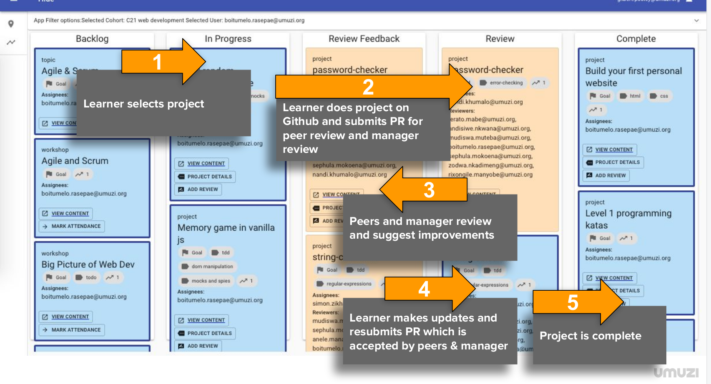
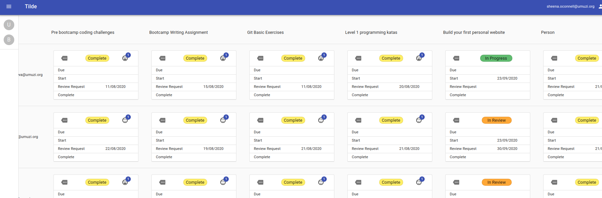
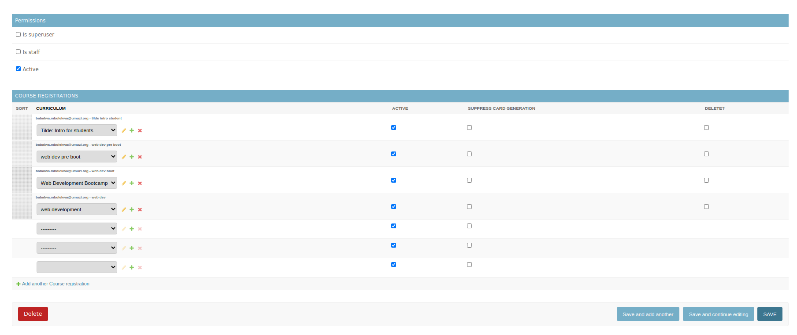
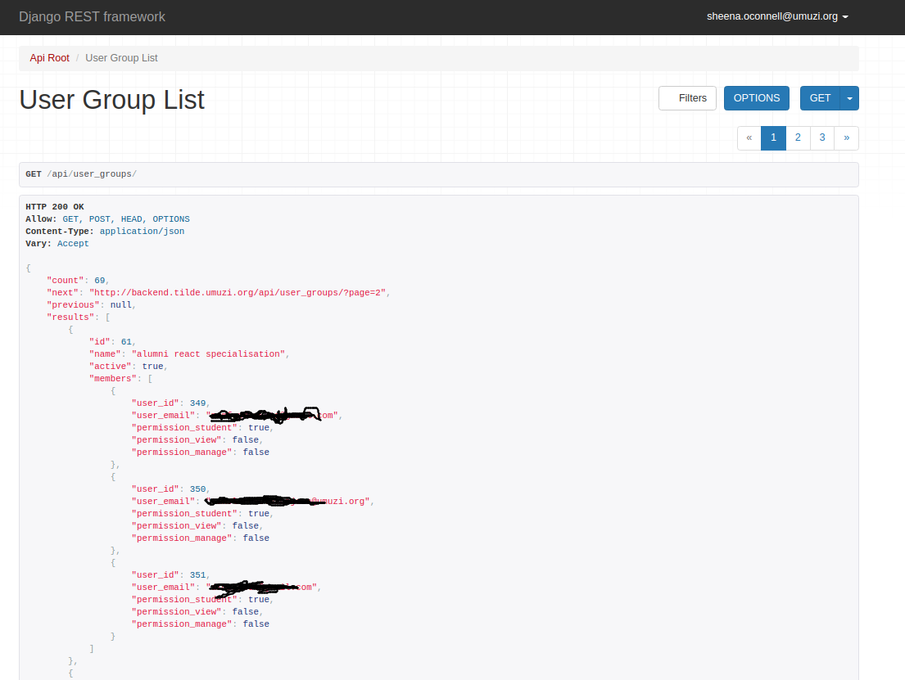
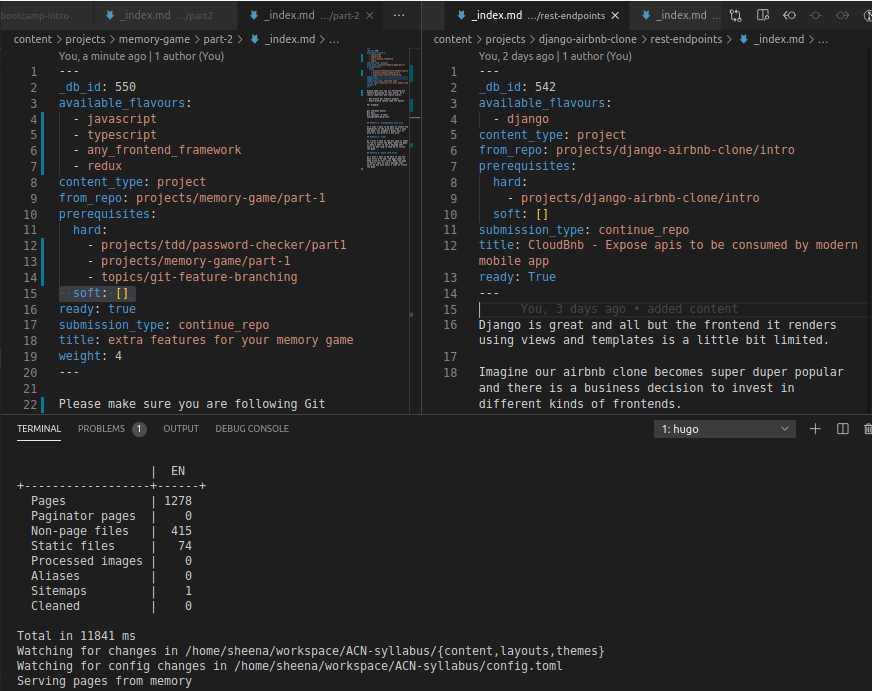
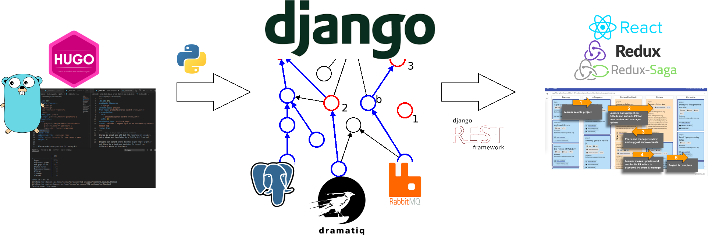

Beginning an open source journey
From on premises training provider to open source communityHi, I'm Sheena
|
Once upon a time, in an apartment block far far away...
(if you are far from JeppesTown, JHB)

Umuzi
- means "home" (Sort of)
- Not for profit
- Find high potential young people
- Pay them to learn
- Train them in high value digital skills
- NQF level 5 certification
- Help them get jobs, help them keep jobs
Umuzi
A day in the life...
BC (Before Covid)
And then came COVID
🔒 Locking down 🔒
- 250 odd students and a bunch of staff on site
- Computers, insurance, data, medical aid, transport...
- And most of our junior team mates were leaving for TIH in the near term...
team_size = team_size/2
everything we had been doing needed to change
And so we built...
First there was attendance...
But what we really care about is productivity
- Bums in chairs at specific times ❌
- Accountability mechanisms ✅
- Async interactions ✅
- Self-paced learning ✅
We had needs
- Admin, track, and deliver training...
- Report on progress
- Manage multiple learning tracks
Did we need an LMS?
Learner Managment System
- Allows set up of curriculums by filling in forms (rich-text) ... our syllabus already exists as a hugo static site
- Allows uploading of videos and other resources ... We can just use Youtube though.
- Track competencies with assessments and projects ... Most of the assessment mechanisms are completely insufficient
- Allow people to move through syllabus, a piece at a time ... but it doesn't resemble real work
We aimed a little higher
- Integrate with our existnig syllabus without too much pain/suffering
- reduce dependency on staff!
- simulate real work environment as much as possible
- promote healthy dev-team habits and practices
- Integrate with Github
- smoke detection
And so we built...
Introducing Tilde
~
Also this thing
A day in the life...
Managing a group
Admin
Data requests and scripting
Under the hood
Syllabus as code
KISS
Great success!
- Learners are doing fine
- Our staff are doing fine
- Successfully ran end to end recruitment bootcamp
Side quest

Infrastructure == People's homes and property + human interactions
Infrastructure == Cars + human interaction
Infrastructure ++
Let's talk about us
Infrastructure == Code schools + human interaction
Goals ++
- Make it cheaper and easier to run code schools
- Increase quality of code school output
- More schools, more grads, more high quality coders
- Less support needed for junior coders, cheaper to manage
Collaboration ++
- collaboration between students and staff of different schools via main instance
- Allow other schools to improve on the platform (open source for the win)
- Allow other schools to improve on syllabus
- Allow industry partners to improve on syllabus
- Easier in for volunteers and mentors across network
Trust ++
- Every alt ed code school is different => new industry partnerships == risky
- schools can leverage quality checking mechanisms built into platform
- Partners get easy access to student stats and reports, see growth, progress, code
- Partners get to vet the syllabus, actually look at how outcomes are proven
- Risk --
And so the African Coding Network was born